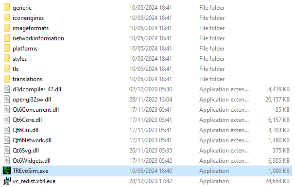
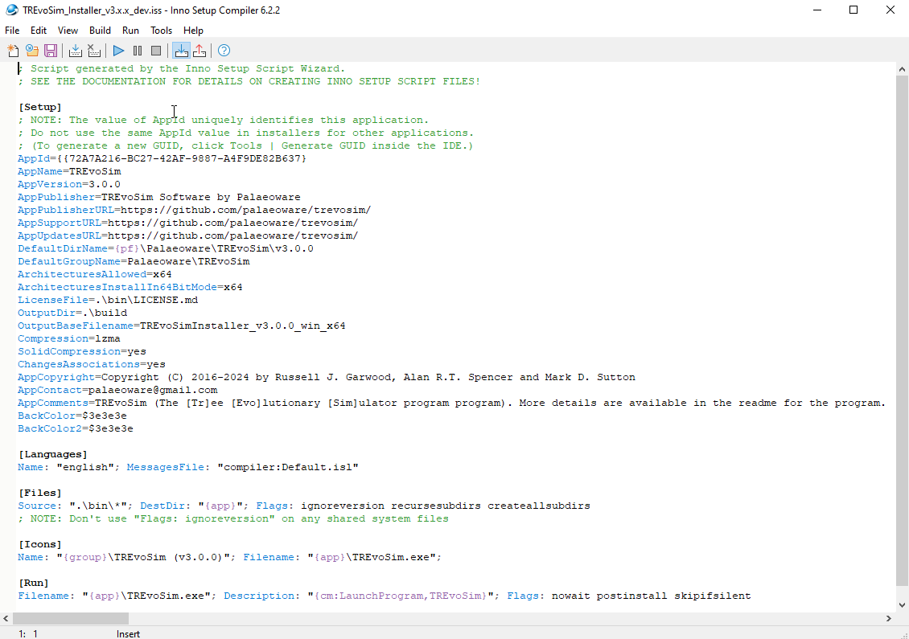

During the installation you will need to select the ‘MSVC 2019 64-bit’ and ‘Qt 5 Compatability Module’ components under the QT 6.x.x sub-category.
During the installation you will need to select the ‘MSVC 2019 64-bit’ component under the QT 6.x.x sub-category.
During the installation check that under the ‘Development and Designer Tools’ sub-category that ‘QT Creator X.X.X’, ‘Debugging Tools for Windows’, ‘CMake X.X.X’, and ‘Ninja X.X.X’ are selected. These should be selected by default.
If you forget or need to amend/check which components are active you can run the QT Maintenance tool (which gets installed automatically) and add/remove/update them post-installation.
Install Git - this is required by CMake during the build to pull the latest version of GoogleTest - download from: https://git-scm.com/download/win
Add Ninja (installed by QT) and Git to your Windows PATH environment variable.
Open the Start Search, type in “env”, and choose ‘Edit the system environment variables’.
Click the ‘Environment Variables…’ button.
From the ‘System Variables’ section, find the entry called “Path” in the variable column, and click the ‘Edit…’ button.
The ‘Edit environment variable’ window will appear.
Click ‘New’ and type in the path to the QT Ninja install folder - the default is: C:\Qt\Tools\Ninja.
Repeat with the path to the Git git.exe folder - the default is: C:\Program Files\Git\cmd.
Save the new settings by pressing the ‘OK’ button.
At this point you may need to restart Windows for the settings to take affect or at the very least restart QT Creator if it is already running.
Run QT Creator and configure the build pipeline. QT Creator should automatically detect your Microsoft Visual Studio 2019 installation and configure the build chain. However, if you have multiple versions installed - or if you get errors in the steps subsequent to this one, you might need to manually change QT creator to use the VisualStudio 2019 Toolkit. To do this, select projects in the left hand toolbar of Qt Creator (ctrl + 5), and then select the kit labelled with the version of Qt you installed, plus “MSVC2019 64bit” under the ‘Build and Run’ section.
In QT Creator using the main menu ‘File → Open File or Project…’ navigating to and select the TREvoSim CMakeLists.txt file in the root of the source code folder. This will open the TREvoSim project within the workspace.
From QT Creator you can build debug and release version of TREvoSim. The easiest way is via the bottom left ‘Build’ button. Alternatively you can use the ‘Build → Build All Projects…’ from the main menu.
Once you have built the release version of TREvoSim through QT Creator, and you if wish to make the binary useable outside of the QT Creator environment (either as a standalone distribution or for use with an installer), you will need to run the Qt Windows Deployment tool. This tool automates the process of creating a deployable folder that contains all QT-related dependencies to make TREvoSim run (e.g., .DLL libraries).
First step is to copy to a new folder (we called ours ‘deploy’ and will refer to this by name) the newly generated binaries (TREvoSim.exe and TREvoSimTest.exe) from your build folder. The build folder should be called ‘build\Desktop_Qt_6_6_1_MSVC2019_64bit-Release’ if using the QT defaults, where Qt_6_6_1 will change to match your current QT 6 version.
From the windows command line ‘’’cd’’’ into the ‘{path to your QT installation}\{QT 6 version}\msvc2019_64\bin\’ folder containing the windeployqt6.exe binary and run the following commands:
where ‘C:\Program Files (x86)\Microsoft Visual Studio’ is your path to the installed VS2019.
windeployqt6 {full path to TREvoSim binary}\TREvoSim.exe --release
Your deploy folder should now look like this:

You can now test if this has worked successfully by attempting to run the TREvoSim binary in the deploy folder. It should run without any missing libraries warnings.
[Optional] To package the application as Windows portable binary release simply compress the deploy folder as a .ZIP archive and rename the new file to TREvoSim_v3.X.X.zip.
[Optional] To package the application as Windows Installation Binary for distribution we recommend using Inno Setup v6.x: https://jrsoftware.org/isinfo.php
Inno Setup is a free installer for Windows programs by Jordan Russell and Martijn Laan.
The file TREvoSim_Installer_v3.x.x_dev.iss under the ./build_utils/windows/inno_setup folder is provided as a template. Copy this file to the deploy folder you created earlier.
Open this file in InnoSetup - if you associated .ISS files with InnoStup during its installation you will be able to double click this file. It will look similar to this:

Next you need to create a new folder under your deploy folder called ‘bin’.
Copy all files other than .ISS file into the ./bin folder.
The template .ISS files is expecting a LICENSE.md files to be in the ./bin folder as well. This file must be copied from the TREvoSim source folder root.
You can now Compile the installer in Inno Setup. Press the small blue arrow pointing down on the tool bar, or from the main menu ‘Build → Compile’. Inno Setup will then compile, compress, and create the a install binary in a folder called ./build. Note the template file is set to run the installation post creations - this may be canceled if you do not want to install straight away.
You can now distribute the TREvoSimInstaller_v3.0.0_win_x64.exe under the ./build folder that was created. Note the name of the installation binary is controlled by the .ISS file and can be changed there.
QT Creator + QT v5.x using MSYS2 (64-bit) and MinGW (64-bit).
We recommend you install and use MSYS2 (64-bit) a Windows package manager, based on modern Cygwin (POSIX compatibility layer) and MinGW-w64, that allows easy installation of QT v5.x 64-bit.
Download and run the latest version of MSYS2 for 64-bit Windows. This will be name “MSYS2-x86_64-…” for the 64-bit installer.
Follow the install instructions. We have used the default install location of “C:mysys64" and it is here that includes required in the .pro files point. If you install MSYS2 to another location the .pro files will need to be updated to your install location.
Once installed open up MSYS2 shell and run the pacman update command: pacman -Syu Note that as this will almost certainly update pacman itself you may have to close down and restart the MSYS2 shell before re-running the command to finish.
Once MSYS2 and pacman are fully updated run the following command to install QT 5.x and its dependencies: pacman -S mingw-w64-x86_64-qt-creator mingw-w64-x86_64-qt5
Optional - if you intend on debugging the software in QT and wish to use GDB then run the following to install the matching GBD debugger: pacman -S mingw-w64-x86_64-gdb
At this stage you should have the following under the MSYS2 install location:
{install location}/mingw64 (Main ming64 folder)
{install location}/mingw64/bin/qmake.exe (QMake for QT version)
You should now be able to find the required libraries under “{install location}/mingw64/bin” and the required header (.h) files for QT v5.x.
Open the .pro file in QT Creator, and then use the information above to setup a new 64-bit ming64 kit. Follow standard QT Creator debug/release procedure.
Xcode can be downloaded from the Apple Store or Apple’s developer website (including older versions of Xcode): https://developer.apple.com/download/. We recommend always using the latest Xcode available from Apple that has been tested with the Qt version you are using.
Install Qt 6.X and QT Creator on your system by running the open source development installer from Qt: https://www.qt.io/download-open-source. An alternative may be to install via homebrew:
Run QT Creator and configure the build pipeline. QT Creator should automatically detect your Xcode installation and configure the build chain. However, if you have multiple versions installed – or if you get errors in the steps subsequent to this one – you might need to manually change QT creator to use the desired Xcode Toolkit. To do this, select projects in the left hand toolbar of Qt Creator (ctrl + 5), and then select the kit labelled with the version of Qt you installed, plus “for macos” under the ‘Build and Run’ section.
In QT Creator using the main menu ‘File → Open File or Project…’ navigating to and select the TREvoSim CMakeLists.txt file in the root of the source code folder. This will open the TREvoSim project within the workspace.
From QT Creator you can build debug and release version of TREvoSim. The easiest way is via the bottom left ‘Build’ button. Alternatively you can use the ‘Build → Build All Projects…’ from the main menu.
Once you have built the release version of TREvoSim through QT Creator, and if you wish to make the binary useable outside of the QT Creator environment (either as a standalone distribution or to package in a .dmg), you will need to run the Qt MacOS Deployment tool. This tool automates the process of creating a deployable application package that contains all QT-related dependencies to make TREvoSim run (e.g., QT libraries).
First step is to copy the newly generated binaries (TREvoSim.app and TREvoSimTest.app) from your build folder to a new one (we called ours ‘deploy’ and will refer to this by name). The build folder should be called ‘build\Desktop_Qt_6_6_2_for-macOS-Release’ if using the QT defaults, where Qt_6_6_2 will change to match your current QT 6 version.
From the terminal command line ‘’’cd’’’ into the ‘{path to your QT installation}/{QT 6 version}/macos/bin/’ folder containing the macdeployqt6 binary and run the following commands:
$ ./macdeployqt6 {full path to TREvoSim binary}/TREvoSim.app -verbose=2
You can view the contents of the application package by right clicking the TREvoSim.app and selecting ‘Show Package Contents’. The folder structure should now look like this:
You can now test if this has worked successfully by attempting to run the TREvoSim.app binary in the deploy folder. It should run without any missing libraries warnings.
TREvoSim > = v3 come with a suite of development tests that verify the core simulator/generator code. These can be called via one of two methods during the devlopment phase:
As a standalone program - for this we leverage the GoogleTest Mocking and Testing Framework (https://github.com/google/googletest) which is pulled in automatically by CMake and built alongside the TREvoSim main program - creating a separate standalone test program called TREvoSimTest. This program can be called from the command line on Mac/Linux or from the QT Creator environment on Windows.
Note: the MacOS TREvoSimTest.app needs to be packaged using the macdeployqt6 program first if you have built from source (see the building for MacOS instructions above). To run the test from the terminal you need to use:
$ ./TREvoSimTest.app/Contents/MacOS/TREvoSimTest
From the QT Creator application. Once the test program has been build (see point 1 above) you can run the test suite with the QT Creator by going to the ‘Tools → Tests → Run All Tests’ from the main menu. This will build the application if not already done so and display the results in the ‘Test Result’ tab which normally appears at the bottom of the workspace.
Note: The tests that run are the same that can be called from the TREvoSim program via the ‘Tests’ button on the main tool bar.